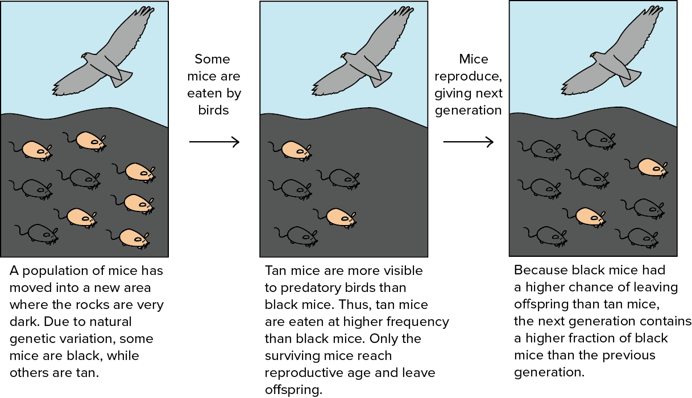
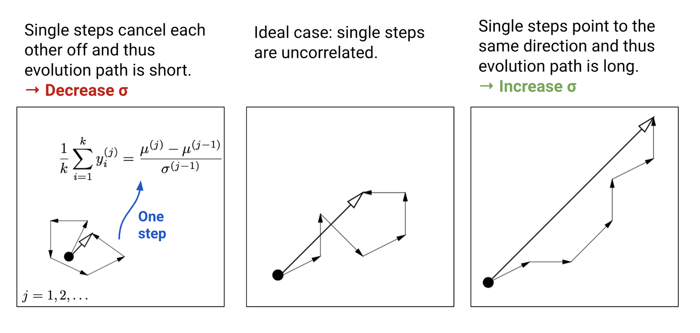
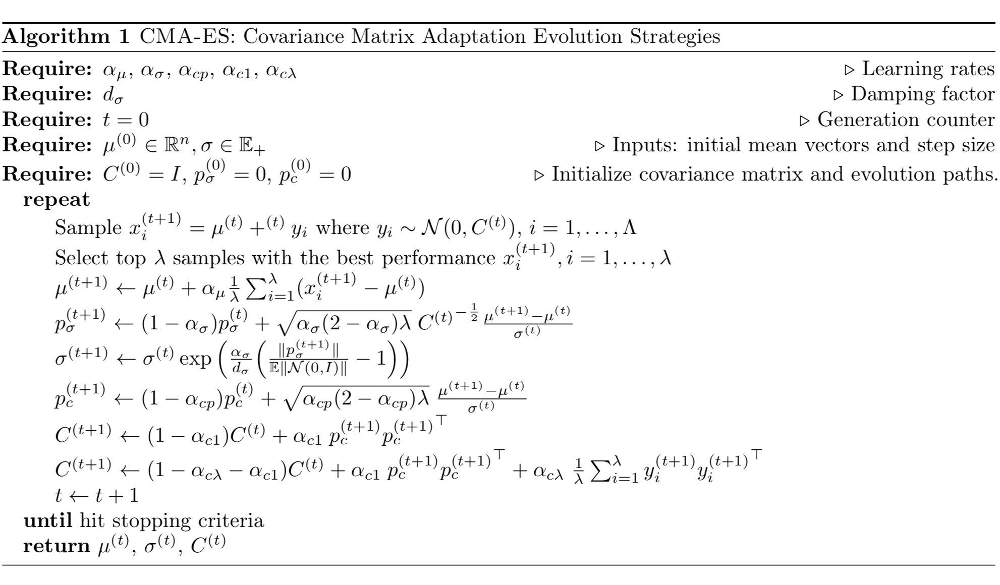

目录
什么是进化策略？
简单高斯进化策略
协方差矩阵自适应进化策略（CMA-ES）
更新均值
控制步长
自适应协方差矩阵
自然进化策略
自然梯度
使用费舍尔信息矩阵进行估计
NES 算法
应用：深度强化学习中的 ES
OpenAI ES 用于强化学习
用 ES 进行探索
CEM-RL
扩展：深度学习中的进化算法
超参数调优：PBT
网络拓扑优化：WANN
参考文献
梯度下降并不是学习最优模型参数的唯一选择。在我们不知道目标函数精确解析形式，或无法直接计算梯度的情况下，进化策略（Evolution Strategies，简称 ES）往往能取得良好效果。本文将深入介绍几种经典的 ES 方法，以及 ES 如何应用于深度强化学习。
随机梯度下降是优化深度学习模型的通用选择，但并非唯一选项。借助黑盒优化算法，即使我们不知道目标函数 f(x): \mathbb{R}^n \to \mathbb{R} 的精确解析形式，从而无法计算梯度或 Hessian 矩阵，也能对其进行评估。黑盒优化方法的例子包括 Simulated Annealing 、Hill Climbing 和 Nelder-Mead method 。f(x)
进化策略（Evolution Strategies，简称 ES）是黑盒优化算法的一种，属于进化算法（Evolutionary Algorithms，简称 EA）大家族。本文将深入探讨几种经典的 ES 方法，并介绍 ES 在深度强化学习中的若干应用。
什么是进化策略？
进化策略（ES）属于进化算法这个大家族。其优化目标是实数向量 x \in \mathbb{R}^n 。
进化算法是一类受自然选择启发、基于种群的优化算法。自然选择认为，具有利于生存性状的个体能够存活下来，并将优良特性传递给下一代。通过这个选择过程，进化逐渐发生，种群也变得越来越适应环境。

How natural selection works. (Image source: Khan Academy:Darwin, evolution, & natural selection)
进化算法可以总结为以下 通用形式 ，作为一种通用的优化方案：
假设我们要优化一个函数 f(x) ，且无法直接计算其梯度，但对于任意 x 仍能评估 f(x) ，且结果是确定的。我们对 x 作为 f(x) 最优解的概率分布的信念为 p_\theta(x) ，该分布由 \theta 参数化。我们的目标是找到 \theta 的最优配置。
在给定固定分布形式（例如高斯分布）的情况下，参数 \theta 承载了关于最佳解的知识，并在世代间被迭代更新。
从 \theta 的初始值开始，我们可以通过循环以下三个步骤来持续更新 \theta ：
生成一个样本种群 D = \{(x_i, f(x_i)\} ，其中 x_i \sim p_\theta(x) 。
评估 D 中样本的“适应度”。
选择最优的个体子集，并根据适应度或排名来更新 \theta 。
在进化算法的另一个流行子类——遗传算法（Genetic Algorithms，简称 GA）中，x 是一串二进制编码 x \in \{0, 1\}^n 。而在 ES 中，x 则是一个实数向量 x \in \mathbb{R}^n 。
简单高斯进化策略
这 是最基础、最经典的进化策略版本。它将 p_\theta(x) 建模为一个 n 维各向同性的高斯分布，其中 \theta 只跟踪均值 \mu 和标准差 \sigma 。
\theta = (\mu, \sigma),\;p_\theta(x) \sim \mathcal{N}(\mathbf{\mu}, \sigma^2 I) = \mu + \sigma \mathcal{N}(0, I)
给定 x \in \mathcal{R}^n ，Simple-Gaussian-ES 的流程如下：
初始化 \theta = \theta^{(0)} 和世代计数器 t=0
从高斯分布中采样，生成大小为 \Lambda 的子代种群：D^{(t+1)}=\{ x^{(t+1)}_i \mid x^{(t+1)}_i = \mu^{(t)} + \sigma^{(t)} y^{(t+1)}_i \text{ where } y^{(t+1)}_i \sim \mathcal{N}(x \vert 0, \mathbf{I}),;i = 1, \dots, \Lambda\} 。
从中选出 \lambda 个具有最优 f(x_i) 的样本，称为精英集合（elite set）。为简化表述，我们可以认为 D^{(t+1)} 中前 k 个样本属于精英集合——将其标记为
D^{(t+1)}\_\text{elite} = \\{x^{(t+1)}\_i \mid x^{(t+1)}\_i \in D^{(t+1)}, i=1,\dots, \lambda, \lambda\leq \Lambda\\}
然后利用精英集合估计下一代的新均值和标准差：
\begin{aligned}
\mu^{(t+1)} &= \text{avg}(D^{(t+1)}_\text{elite}) = \frac{1}{\lambda}\sum_{i=1}^\lambda x_i^{(t+1)} \\
{\sigma^{(t+1)}}^2 &= \text{var}(D^{(t+1)}_\text{elite}) = \frac{1}{\lambda}\sum_{i=1}^\lambda (x_i^{(t+1)} -\mu^{(t)})^2
\end{aligned}
重复步骤 (2)-(4)，直到结果足够好为止 ✌️
协方差矩阵自适应进化策略（CMA-ES）
标准差 \sigma 决定了探索程度：\sigma 越大，我们能采样的子代搜索空间就越大。在朴素 ES 中，\sigma^{(t+1)} 与 \sigma^{(t)} 高度相关，因此算法无法在需要时（例如置信度发生变化时）快速调整探索空间。
CMA-ES （全称“Covariance Matrix Adaptation Evolution Strategy”，协方差矩阵自适应进化策略）通过引入协方差矩阵 C 来跟踪样本之间的成对依赖关系，从而解决了这个问题。新的分布参数变为：
\theta = (\mu, \sigma, C),\; p_\theta(x) \sim \mathcal{N}(\mu, \sigma^2 C) \sim \mu + \sigma \mathcal{N}(0, C)
其中 \sigma 控制分布的整体尺度，通常称为步长（step size）。
在深入探讨 CMA-ES 中参数如何更新之前，最好先回顾一下协方差矩阵在多元高斯分布中的作用。作为一个实对称矩阵，协方差矩阵 C 具有以下良好性质（见 证明 和 证明 ）：
它总是可对角化的。
始终半正定。
所有特征值都是非负实数。
所有特征向量都是正交的。
存在由其特征向量构成的 \mathbb{R}^n 的标准正交基。
设矩阵 C 具有特征向量构成的标准正交基 B = [b_1, \dots, b_n] ，对应的特征值为 \lambda_1^2, \dots, \lambda_n^2 。令 D=\text{diag}(\lambda_1, \dots, \lambda_n) 。
C = B^\top D^2 B
= \begin{bmatrix}
\mid & \mid & & \mid \\
b_1 & b_2 & \dots & b_n\\
\mid & \mid & & \mid \\
\end{bmatrix}
\begin{bmatrix}
\lambda_1^2 & 0 & \dots & 0 \\
0 & \lambda_2^2 & \dots & 0 \\
\vdots & \dots & \ddots & \vdots \\
0 & \dots & 0 & \lambda_n^2
\end{bmatrix}
\begin{bmatrix}
- & b_1 & - \\
- & b_2 & - \\
& \dots & \\
- & b_n & - \\
\end{bmatrix}
C 的平方根为：
C^{\frac{1}{2}} = B^\top D B
Symbol
Meaning
x_i^{(t)} \in \mathbb{R}^n the i -th samples at the generation (t)
y_i^{(t)} \in \mathbb{R}^n x_i^{(t)} = \mu^{(t-1)} + \sigma^{(t-1)} y_i^{(t)}
\mu^{(t)} mean of the generation (t)
\sigma^{(t)} step size
C^{(t)} covariance matrix
B^{(t)} a matrix of C ’s eigenvectors as row vectors
D^{(t)} a diagonal matrix with C ’s eigenvalues on the diagnose.
p_\sigma^{(t)} evaluation path for \sigma at the generation (t)
p_c^{(t)} evaluation path for C at the generation (t)
\alpha_\mu learning rate for \mu ’s update
\alpha_\sigma learning rate for p_\sigma
d_\sigma damping factor for \sigma ’s update
\alpha_{cp} learning rate for p_c
\alpha_{c\lambda} learning rate for C ’s rank-min(λ, n) update
\alpha_{c1} learning rate for C ’s rank-1 update
更新均值
\mu^{(t+1)} = \mu^{(t)} + \alpha_\mu \frac{1}{\lambda}\sum_{i=1}^\lambda (x_i^{(t+1)} - \mu^{(t)})
CMA-ES 引入学习率 \alpha_\mu \leq 1 来控制均值 \mu 的更新速度。通常将其设为 1，此时更新公式与朴素 ES 完全相同，即 \mu^{(t+1)} = \frac{1}{\lambda}\sum_{i=1}^\lambda (x_i^{(t+1)} 。
控制步长
采样过程可以与均值和标准差解耦：
x^{(t+1)}_i = \mu^{(t)} + \sigma^{(t)} y^{(t+1)}_i \text{, where } y^{(t+1)}_i = \frac{x_i^{(t+1)} - \mu^{(t)}}{\sigma^{(t)}} \sim \mathcal{N}(0, C)
参数 \sigma 控制分布的整体尺度。它与协方差矩阵分离，因此我们能比完整协方差更快地调整步长。更大的步长会导致参数更新更快。为了判断当前步长是否合适，CMA-ES 构造了一条进化路径 p_\sigma ，它是对连续若干移动步长 \frac{1}{\lambda}\sum_{i}^\lambda y_i^{(j)}, j=1, \dots, t 的累加。通过将这条路径的长度与其在随机选择下的期望长度（即单步不相关的情况）进行比较，我们就能相应地调整 \sigma （见图 2）。

Three scenarios of how single steps are correlated in different ways and their impacts on step size update. (Image source: additional annotations on Fig 5 inCMA-ES tutorialpaper)
每次更新进化路径时，都会使用同一代内移动步长的平均值 y_i 。
\begin{aligned}
&\frac{1}{\lambda}\sum_{i=1}^\lambda y_i^{(t+1)}
= \frac{1}{\lambda} \frac{\sum_{i=1}^\lambda x_i^{(t+1)} - \lambda \mu^{(t)}}{\sigma^{(t)}}
= \frac{\mu^{(t+1)} - \mu^{(t)}}{\sigma^{(t)}} \\
&\frac{1}{\lambda}\sum_{i=1}^\lambda y_i^{(t+1)}
\sim \frac{1}{\lambda}\mathcal{N}(0, \lambda C^{(t)})
\sim \frac{1}{\sqrt{\lambda}}{C^{(t)}}^{\frac{1}{2}}\mathcal{N}(0, I) \\
&\text{Thus } \sqrt{\lambda}\;{C^{(t)}}^{-\frac{1}{2}} \frac{\mu^{(t+1)} - \mu^{(t)}}{\sigma^{(t)}} \sim \mathcal{N}(0, I)
\end{aligned}
通过乘以 C^{-\frac{1}{2}} ，进化路径被变换为与其方向无关的形式。{C^{(t)}}^{-\frac{1}{2}} = {B^{(t)}}^\top {D^{(t)}}^{-\frac{1}{2}} {B^{(t)}} 变换的具体过程如下：
{B^{(t)}} 包含 C 特征向量的行向量。它将原始空间投影到相互正交的主轴上。
然后 {D^{(t)}}^{-\frac{1}{2}} = \text{diag}(\frac{1}{\lambda_1}, \dots, \frac{1}{\lambda_n}) 将主轴的长度缩放至相等。
{B^{(t)}}^\top 将空间变换回原始坐标系。
为了给最近的世代赋予更高的权重，我们使用 Polyak 平均法，以学习率 \alpha_\sigma 来更新进化路径。同时，权重经过平衡，使得 p_\sigma 在更新前后均保持 共轭 ，即 \sim \mathcal{N}(0, I) 。
\begin{aligned}
p_\sigma^{(t+1)}
& = (1 - \alpha_\sigma) p_\sigma^{(t)} + \sqrt{1 - (1 - \alpha_\sigma)^2}\;\sqrt{\lambda}\; {C^{(t)}}^{-\frac{1}{2}} \frac{\mu^{(t+1)} - \mu^{(t)}}{\sigma^{(t)}} \\
& = (1 - \alpha_\sigma) p_\sigma^{(t)} + \sqrt{c_\sigma (2 - \alpha_\sigma)\lambda}\;{C^{(t)}}^{-\frac{1}{2}} \frac{\mu^{(t+1)} - \mu^{(t)}}{\sigma^{(t)}}
\end{aligned}
随机选择下 p_\sigma 的期望长度为 \mathbb{E}|\mathcal{N}(0,I)| ，即一个 \mathcal{N}(0,I) 维随机变量 L2 范数的期望。按照图 2 的思路，我们根据以下比例来调整步长：|p_\sigma^{(t+1)}| / \mathbb{E}|\mathcal{N}(0,I)|
\begin{aligned}
\ln\sigma^{(t+1)} &= \ln\sigma^{(t)} + \frac{\alpha_\sigma}{d_\sigma} \Big(\frac{\|p_\sigma^{(t+1)}\|}{\mathbb{E}\|\mathcal{N}(0,I)\|} - 1\Big) \\
\sigma^{(t+1)} &= \sigma^{(t)} \exp\Big(\frac{\alpha_\sigma}{d_\sigma} \Big(\frac{\|p_\sigma^{(t+1)}\|}{\mathbb{E}\|\mathcal{N}(0,I)\|} - 1\Big)\Big)
\end{aligned}
其中 d_\sigma \approx 1 是一个阻尼参数，用于控制 \ln\sigma 的变化速度。
自适应协方差矩阵
对于协方差矩阵，可以直接使用精英样本的 y_i 进行估计（回顾 y_i \sim \mathcal{N}(0, C) ）：
C_\lambda^{(t+1)}
= \frac{1}{\lambda}\sum_{i=1}^\lambda y^{(t+1)}_i {y^{(t+1)}_i}^\top
= \frac{1}{\lambda {\sigma^{(t)}}^2} \sum_{i=1}^\lambda (x_i^{(t+1)} - \mu^{(t)})(x_i^{(t+1)} - \mu^{(t)})^\top
上述估计仅在所选种群足够大时才可靠。然而，我们希望用较小的种群进行快速迭代。这就是为什么 CMA-ES 提出了一种更可靠但也更复杂的方法来更新 C 。它包含两条独立的路径：
Rank-min(λ, n) 更新：利用 \{C_\lambda\} 的历史，每代从零开始估计。
Rank-one 更新：利用历史估计移动步长 y_i 及其符号信息。
第一条路径考虑从整个 \{C_\lambda\} 历史中估计 C 。例如，如果已经经历了很多代，那么 C^{(t+1)} \approx \text{avg}(C_\lambda^{(i)}; i=1,\dots,t) 将是一个很好的估计器。与 p_\sigma 类似，我们也使用带学习率的 Polyak 平均来融入历史信息：
C^{(t+1)}
= (1 - \alpha_{c\lambda}) C^{(t)} + \alpha_{c\lambda} C_\lambda^{(t+1)}
= (1 - \alpha_{c\lambda}) C^{(t)} + \alpha_{c\lambda} \frac{1}{\lambda} \sum_{i=1}^\lambda y^{(t+1)}_i {y^{(t+1)}_i}^\top
学习率的一个常见选择是 \alpha_{c\lambda} \approx \min(1, \lambda/n^2) 。
第二条路径旨在解决 y_i{y_i}^\top = (-y_i)(-y_i)^\top 丢失符号信息的问题。与我们调整步长 \sigma 的方式类似，这里使用一条进化路径 p_c 来跟踪符号信息，其构造方式保证 p_c 在更新前后均保持共轭，即 \sim \mathcal{N}(0, C) 。
我们可以将 p_c 视为计算 \text{avg}_i(y_i) 的另一种方式（注意两者均为 \sim \mathcal{N}(0, C) ），只不过它利用了全部历史并保留了符号信息。注意我们在上一节已经知道 \sqrt{k}\frac{\mu^{(t+1)} - \mu^{(t)}}{\sigma^{(t)}} \sim \mathcal{N}(0, C) ，
\begin{aligned}
p_c^{(t+1)}
&= (1-\alpha_{cp}) p_c^{(t)} + \sqrt{1 - (1-\alpha_{cp})^2}\;\sqrt{\lambda}\;\frac{\mu^{(t+1)} - \mu^{(t)}}{\sigma^{(t)}} \\
&= (1-\alpha_{cp}) p_c^{(t)} + \sqrt{\alpha_{cp}(2 - \alpha_{cp})\lambda}\;\frac{\mu^{(t+1)} - \mu^{(t)}}{\sigma^{(t)}}
\end{aligned}
随后，协方差矩阵按照 p_c 进行更新：
C^{(t+1)} = (1-\alpha_{c1}) C^{(t)} + \alpha_{c1}\;p_c^{(t+1)} {p_c^{(t+1)}}^\top
当 k 较小时，rank-one 更新方法被认为比 rank-min(λ, n) 更新有显著改进，因为它利用并传递了移动步长的符号以及连续步长之间的相关性。
最终我们将两种方法结合起来，
C^{(t+1)}
= (1 - \alpha_{c\lambda} - \alpha_{c1}) C^{(t)}
+ \alpha_{c1}\;\underbrace{p_c^{(t+1)} {p_c^{(t+1)}}^\top}_\textrm{rank-one update}
+ \alpha_{c\lambda} \underbrace{\frac{1}{\lambda} \sum_{i=1}^\lambda y^{(t+1)}_i {y^{(t+1)}_i}^\top}_\textrm{rank-min(lambda, n) update}

Illustration of how CMA-ES works on a 2D optimization problem (the lighter color the better). Black dots are samples in one generation. The samples are more spread out initially but when the model has higher confidence in finding a good solution in the late stage, the samples become very concentrated over the global optimum. (Image source:Wikipedia CMA-ES)